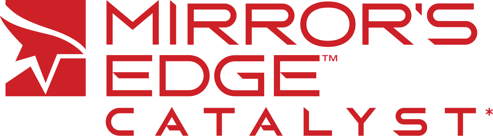
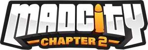

ROBLOX DEVELOPMENT STUDIO
QUANT-STUDIO
● IN DEVELOPMENT
Мы — независимая команда разработчиков в Roblox. Создаем уникальные миры, фокусируясь на качественном коде, проработанном геймдизайне и захватывающей атмосфере. Наша главная цель — делать игры, в которые хочется возвращаться.
01
Наш главный проект
BLACKOUT
опэн ворлд экшн с элементами хоррора.
МЫ ВДОХНОВЛЯЕМСЯ ТАКИМИ ПРОЕКТАМИ, КАК:





АТМОСФЕРА
- В игре есть две разные атмосферы, которые сменяют друг друга в зависимости от игрового времени.
- Главные аспекты геймплейных механик — это игра со светом и глобальные отключения электричества (блэкауты) [Это влияет на разные локации по-разному].
ПРЕИМУЩЕСТВА И ПЛЮСЫ ИГРЫ
- 01 Мы используем самые продвинутые механики движка роблокса и лучших кодеров, оптимизация в игре будет на высшем уровне.
- 02 Уникальный контент который никто еще не пробовал создавать в Roblox.
- 03 Максимальная отзывчивость к игроку по ходу всего геймплея, чтобы даже дети могли это попробовать.
- 04 В игре нет P2W, сбалансированная и в меру занимающая время прогрессия.
ЧТО ЖДЕТ В ИГРЕ
- 01 Первый в своем роде проект который будет иметь полноценный озвученый сюжет в Roblox на нескольких языках.
- 02 Один из самых больших игровых миров в Roblox сравнимо с Deepwoken.
- 03 Полная поддержка игры как от первого лица так и от третьего лица для игроков с VR, Xbox Gamepad, PC.(телефоны может быть)
- 04 Самый лучший саунд и левел дизайн в Roblox, для достижения самой не забываемой atmosphere в игре.
КОГДА РЕЛИЗ?
- На момент релиза запланировано 23 ограбления, огромное количество проработанных механик и масса крутых фич.
- Точную дату релиза мы не планируем, так как невозможно со 100% точностью рассчитать время на разработку, но мы готовы назвать примерные сроки.
ПРИМЕРНАЯ ДАТА РЕЛИЗА ВЕРСИИ 1.0 — Q3 2027
- [финальные сроки зависят от количества багов, которые придется исправлять, и от того, насколько критичными они будут].
- Но учтите: до полноценного релиза вас ждет еще много этапов открытых и закрытых тестирований!
02
Набор в команду
Ищем Тестировщиков (QA)
На добровольной основе / Без оплатыЕсли вы любите наши игры, хотите первыми находить баги, тестировать секретные обновления и напрямую общаться с разработчиками — мы ждем вас!
Что нужно делать:
- искать критические ошибки и дюпы.
- Писать понятные отчеты (баг-репорты).
- Проверять баланс новых обновлений.
Что мы предлагаем взамен:
- Уникальный тег в Discord и в игре.
- Доступ к закрытым тестовым серверам.
- Бесплатные внутриигровые бонусы/валюту.
03
Будущие планы
Запланированные новые проекты
В разработке
REFRACT
Паркур игра вдохновленная Mirrors Edge
FAQ